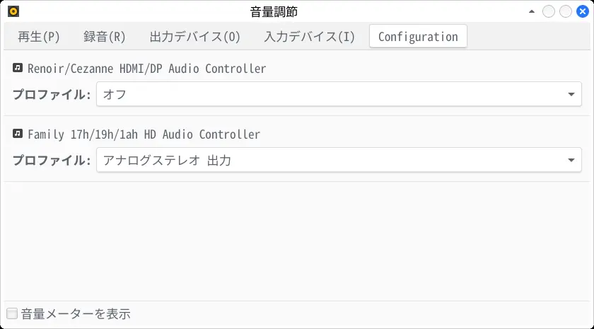

2026-02-06
wget https://github.com/speed47/spectre-meltdown-checker/raw/master/spectre-meltdown-checker.sh
sudo sh spectre-meltdown-checker.sh「SUMMARY」がすべて「OK」（緑色）になっていれば問題ない。
yay -S --needed sddm
sudo systemctl --force enable sddm.serviceArch の Wine パッケージは wow64 ビルドに変更された。これにより multilib が不要になった。
yay -S --needed wine
ln -sf ~/.wine/drive_c ~
# Winetricks
wget -N https://raw.githubusercontent.com/Winetricks/winetricks/refs/heads/master/src/winetricks
chmod a+x winetricks
sudo mv winetricks /usr/bin/winetricks
# Fonts
winetricks -f fakejapanese
# DXVK
winetricks -f dxvkyay -S --needed pavucontrol
pavucontrol
「設定」タブを開いて、使用しないデバイスを「オフ」にする。
wget https://github.com/mrbumpy409/GeneralUser-GS/archive/refs/heads/main.zip -O GeneralUser-GS-main.zip
7z x GeneralUser-GS-main.zip
cd GeneralUser-GS-main/
fluidsynth -a pipewire -m alsa_seq -r 48000 -g 0.8 -z 128 GeneralUser-GS.sf2 "demo MIDIs/The HYBRID Collage (v2.0) - by S. Christian Collins.mid"BootCurrent の番号を確認。
efibootmgr
# BootCurrent: 0000
# Timeout: 1 seconds
# BootOrder: 0000,0001
# Boot0000* Linux Boot Manager
# Boot0001* ubuntuBootCurrent 以外のエントリを削除。
sudo efibootmgr -b 0001 -B
# BootCurrent: 0000
# Timeout: 1 seconds
# BootOrder: 0000
# Boot0000* Linux Boot Managermousepad を起動して「Ctrl+M」を押す。
gsettings で変更する場合は次を実行。
gsettings set org.xfce.mousepad.preferences.window menubar-visible truerm -rf ~/.config/dconf/sudo pacman -Rdd xdg-desktop-portal-gnome
sudo pacman -S xdg-desktop-portal-lxqt次のコマンドをショートカットキーに登録する。
# 音量アップ
pactl set-sink-volume @DEFAULT_SINK@ +2%
# 音量ダウン
pactl set-sink-volume @DEFAULT_SINK@ -2%アクティブなモニタを確認。
xrandr --listactivemonitors
# 0: +*HDMI-A-0 1920/708x1080/398+0+0 HDMI-A-0次のコマンドをショートカットキーに登録する。
# 画面の明るさを上げる
xrandr --output HDMI-A-0 --brightness 1.2
# 画面の明るさを元に戻す
xrandr --output HDMI-A-0 --brightness 1暗めの場面のとき一時的に明るくできて便利。
udevadm info -e | grep -e MEMORY_DEVICE | grep SPEED
# E: MEMORY_DEVICE_1_SPEED_MTS=4000
# E: MEMORY_DEVICE_1_CONFIGURED_SPEED_MTS=4000
# E: MEMORY_DEVICE_3_SPEED_MTS=4000
# E: MEMORY_DEVICE_3_CONFIGURED_SPEED_MTS=4000$HOME にある 10MB 以下のファイルを $HOME/_tmp/home_bak/ にバックアップする。
mkdir -p $HOME/_tmp
rsync -av \
--max-size=10m \
--delete \
--delete-excluded \
--exclude="_tmp*" \
--exclude="tmp_*" \
--exclude="*cache" \
--exclude="*Cache" \
--exclude=".icons" \
--exclude=".local/share/icons" \
--exclude=".local/share/Trash" \
$HOME/ $HOME/_tmp/home_bak/
cd $HOME/_tmp/
tar --zstd -cf home_bak.tar.zst home_bak/home_bak.tar.zst をUSBメモリに保存。
これがあればSSDが壊れてもパスワードや設定ファイルを残せる。
# tmpfs にファイルを解凍
tar -xf home_bak.tar.zst -C /tmp/
cd /tmp/
rsync -av /tmp/home_bak/ $HOME/再起動する。
yay -S --needed smartmontools
sudo smartctl -a /dev/nvme0 | grep "Data Units Written"
# Data Units Written: 462,559 [236 GB]sudo smartctl -a /dev/nvme0 | grep Temperature
# Temperature: 45 CelsiusSMART 情報で確認。
sudo smartctl -a /dev/nvme0 | grep "SMART overall-health"
# SMART overall-health self-assessment test result: PASSED必要ならショートテストを行う。
sudo smartctl -t short /dev/nvme0例として /home パーティションの断片化状態を確認する。
最初に /home のデバイス名を調べる。
df | grep home
# /dev/nvme0n1p3 1.8T 516G 1.3T 29% /home/dev/nvme0n1p3 の断片化状態を確認。
sudo e4defrag -c /dev/nvme0n1p3
# Fragmentation score 0
# [0-30 no problem: 31-55 a little bit fragmented: 56- needs defrag]
# This device (/dev/nvme0n1p3) does not need defragmentation.
# Done.ext4 のデフォルトでは 5% の領域が予約ブロックになっている。これを解放すると空き容量が増える。
例として /home パーティションの予約ブロックを開放する。
最初に /home のデバイス名を調べる。
df | grep home
# /dev/nvme0n1p3 1.8T 516G 1.3T 29% /home/dev/nvme0n1p3 の予約ブロックを 0 にする。
sudo tune2fs -m 0 /dev/nvme0n1p37秒ごとにSMART情報を読み込んで、IntelliPark を回避する。
mousepad prevent-intellipark-sda次の行を貼り付けて保存。「/dev/sda」はデバイスの場所。環境に応じて変更する。
#!/bin/sh
while true
do
sudo smartctl -a /dev/sda | grep Load_Cycle_Count
sleep 7
doneインストール。
chmod a+x prevent-intellipark-sda
sudo cp prevent-intellipark-sda /usr/bin/実行。
sudo prevent-intellipark-sda30秒ほど待って「Load_Cycle_Count」が増えなければ成功。
xset r ondate && sleep 60m && systemctl suspendmousepad ~/.config/openbox/rc.xml<context name=“Client”> の下に次の行を加える。
<context name="Client">
<mousebind button="Up" action="Click">
<action name="Focus"/>
<action name="Raise"/>
</mousebind>
<mousebind button="Down" action="Click">
<action name="Focus"/>
<action name="Raise"/>
</mousebind># パッケージ
yay -S --needed bash-completion cmake dosfstools evince \
fcitx5 fcitx5-configtool fcitx5-gtk fcitx5-qt \
file-roller filezilla gnome-disk-utility google-chrome \
less libva-utils lm_sensors mousepad mpv \
noto-fonts noto-fonts-emoji 7zip fuse pavucontrol \
poppler-data flake8 python-jaconv ripgrep ristretto \
rsync vulkan-radeon webp-pixbuf-loader wget \
xf86-video-amdgpu xfce4-sensors-plugin xorg-xrandr
# yt-dlp
wget https://github.com/yt-dlp/yt-dlp/releases/latest/download/yt-dlp
chmod a+x yt-dlp
sudo mv yt-dlp /usr/bin/
# mousepad のカーソル位置を常に1行目にする
mkdir -p ~/tmp_arch
cd ~/tmp_arch/
cp -f /usr/share/applications/org.xfce.mousepad.desktop .
sed -i -e 's,Exec=mousepad %U$,Exec=mousepad -l 1 %U,g' org.xfce.mousepad.desktop
sudo cp org.xfce.mousepad.desktop /usr/share/applications/org.xfce.mousepad.desktop
# アップデートが来ても無視するパッケージ
mkdir -p ~/tmp_arch
cd ~/tmp_arch/
cp /etc/pacman.conf .
sed -i -e 's,#IgnorePkg =,IgnorePkg = fcitx5-mozc-ut,g' pacman.conf
sudo mv -f pacman.conf /etc/pacman.conf
# ファイアウォールを設定
yay -S --needed ufw
sudo ufw enable
sudo systemctl enable ufw
sudo ufw default deny
sudo ufw allow from 192.168.0.0/24
sudo ufw limit ssh
# ファイアウォールの例外アプリを追加
# 追加できるアプリは sudo ufw app list で確認
sudo ufw allow qBittorrent
# ファイアウォールの状態を確認
sudo ufw status
# ファイアウォールの例外アプリを削除
# sudo ufw delete allow qBittorrent
# マウスカーソル
mkdir -p ~/tmp_arch
cd ~/tmp_arch/
wget https://github.com/yeyushengfan258/Future-cursors/archive/refs/heads/master.zip -O Future-cursors-master.zip
7z x Future-cursors-master.zip
cd Future-cursors-master/
sh install.sh
# アイコン
mkdir -p ~/tmp_arch
cd ~/tmp_arch/
wget -qO- https://git.io/papirus-icon-theme-install | env DESTDIR="$HOME/.local/share/icons" sh
# Mozc 用のアイコンを削除
rm -f ~/.local/share/icons/Papirus*/*/*/*mozc*
# テーマ
mkdir -p ~/tmp_arch
cd ~/tmp_arch/
wget https://github.com/daniruiz/skeuos-gtk/archive/refs/heads/master.zip -O skeuos-gtk-master.zip
7z x skeuos-gtk-master.zip
mkdir -p ~/.local/share/themes
rm -rf ~/.local/share/themes/Skeuos-Blue-*
mv skeuos-gtk-master/themes/Skeuos-Blue-* ~/.local/share/themes/
# ~/.bashrc の設定
printf 'EDITOR=/usr/bin/mousepad
export XCURSOR_PATH="~/.local/share/icons/"
alias df="df -h -x tmpfs"
alias du="du -h"
# ディレクトリをサイズ順に並べる
alias duu="du -BM -d1 | sort -n"
# ファイルリストを縦に並べる
alias ls="ls -1"
alias rg="rg --ignore-case \
--colors path:fg:0x34,0x83,0xE3 \
--colors line:fg:0x34,0x83,0xE3 \
--colors match:bg:0x34,0x83,0xE3 \
--colors match:fg:white"
alias yt-dlp="yt-dlp --trim-filenames 100"
alias yt-dlp-fhd="yt-dlp -S res:1080 --trim-filenames 100"
' > ~/.bashrc